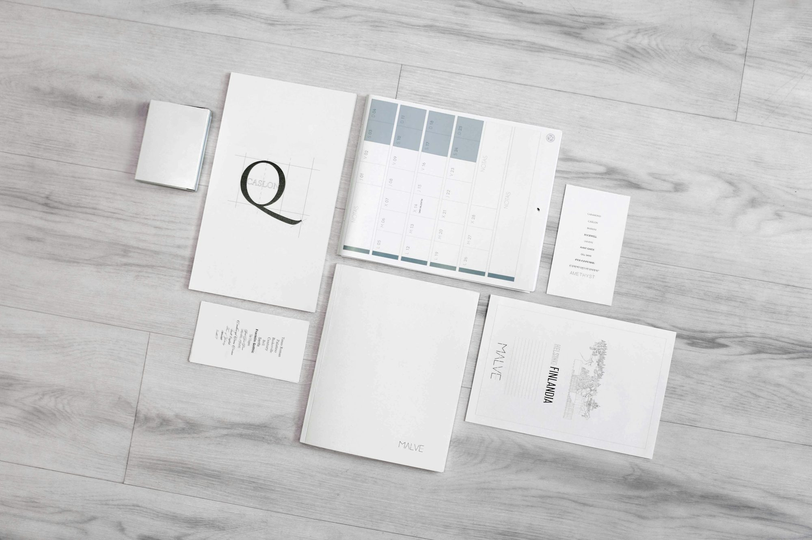

The Versatility of Spiral-Bound Notebooks
Spiral-bound notebooks are a common choice in classrooms due to their practical design. Literacy The wire or plastic spiral binding allows pages to lay flat, making it easy for students to write across the entire surface. This Innovation feature is particularly beneficial during lectures, group work, or note-sharing activities, where students can reference their notes without any hassle. Additionally, many spiral-bound notebooks come with perforated pages that enable students to tear out sheets easily when needed, promoting a flexible and adaptable approach to note-taking.
The variety of sizes, colors, and styles available in spiral-bound notebooks allows students to express their individuality while meeting their organizational needs. Whether used for jotting down lecture notes, brainstorming project ideas, or sketching diagrams, spiral-bound notebooks can accommodate various learning styles. This versatility encourages students to engage actively with their materials, enhancing their connection to the subjects they study.
Composition Notebooks: A Reliable Classic
Composition notebooks have been a staple in education for many years, appreciated for their sturdy construction Teaching and straightforward design. With a durable cardboard cover and sewn binding, these notebooks are built to endure the daily demands of student life. Their recognizable black-and-white marbled cover not only has a classic appeal but also provides a practical way for students to keep their notes organized.
Typically featuring lined or grid paper, composition notebooks are ideal for structured writing, calculations, and detailed note-taking. Their simple layout encourages students to focus on the content rather than distractions, allowing for a more immersive learning experience. Composition notebooks are perfect for drafting essays, taking notes during lectures, or documenting scientific observations, providing a reliable platform for academic achievement.
Wirebound Notebooks: Flexibility for Creative Minds
Wirebound notebooks offer a unique combination of flexibility and accessibility that many students find appealing. The metal wire binding allows pages to be turned easily, facilitating quick access to notes during class discussions or group projects. Available in a range of sizes and formats, including ruled, blank, and grid pages, wirebound notebooks cater to a diverse range of student needs and preferences.
Students appreciate the adaptability of wirebound notebooks, as they can seamlessly transition between subjects and activities. The secure binding ensures that pages stay in place, helping students maintain an organized system for their notes. Additionally, wirebound notebooks encourage creative expression, providing ample space for drawing, brainstorming, or jotting down spontaneous ideas. This freedom fosters engagement and promotes a more interactive learning environment.
Ring-Bound Notebooks: Customization and Control
For those who value personalization, ring-bound notebooks are an excellent option. These notebooks utilize a ring or disc binding system that allows students to easily remove or add pages, creating a customizable Literacy organizational system. Many ring-bound notebooks also feature covers that can be personalized, allowing students to create a notebook that reflects their individual style and preferences.
This level of customization fosters a sense of ownership and responsibility in students, encouraging them to take charge of their learning. By integrating various types of paper—such as lined, blank, or Skills even specialized project sheets—ring-bound notebooks support different learning styles and promote effective note organization. This ability to adapt and customize promotes student engagement and enhances the learning experience.
Traveler's Notebooks: A Canvas for Creativity
Traveler’s notebooks are increasingly popular among students who appreciate both creativity and functionality. Often made from durable materials like leather Learning or fabric, these notebooks feature elastic band closures and allow for multiple inserts. This design makes them perfect for journaling, sketching, and planning, catering to students who enjoy expressing their thoughts and ideas visually.
The flexibility of traveler’s notebooks encourages students to experiment with different types of paper, inviting artistic expression and thoughtful documentation of their educational journeys. By combining writing, drawing, and personal reflection, students create a rich tapestry of their learning experiences. This personalized approach not only enhances creativity but also deepens their understanding of the subjects they are studying.
Moleskine Notebooks: Elegance Meets Functionality
Moleskine notebooks are known for their premium quality and sophisticated design. With durable covers and high-quality paper, these notebooks come in various sizes and styles, including ruled, plain, dotted, and squared formats. This variety allows students Examination to choose the notebook type that best suits their writing style Knowledge and educational needs.
The exceptional quality of Moleskine notebooks enhances the writing experience, making it enjoyable to take notes, draft ideas, or reflect on learning. The smooth paper accommodates a range of writing instruments, providing a seamless experience that inspires creativity and thoughtful expression. Their compact size makes them easy to carry, ensuring that students can capture inspiration whenever it strikes, whether during class or while Learning on the go.
Pocket-Sized Notebooks: Convenient and Portable
For students who prioritize convenience, pocket-sized notebooks are essential. Designed to fit easily into pockets or small bags, these notebooks are ideal for quick note-taking or sketching while on the move. Despite their small size, pocket-sized notebooks are available in various bindings and paper types, ensuring versatility for different tasks.
Students often find these Knowledge notebooks invaluable for capturing fleeting thoughts, reminders, or ideas during class or while commuting. Their portability encourages a habit of consistent reflection and organization, as students can Innovation document important information at a moment’s notice. By facilitating real-time note-taking, pocket-sized notebooks help students remain engaged and proactive in their learning journeys.
Specialty Notebooks: Meeting Unique Needs
Specialty notebooks serve specific educational purposes, adding another layer of functionality to the student toolkit. These can include bullet journals, sketchbooks, planners, or notebooks designed for particular subjects or projects. Each type addresses distinct needs, catering to students with varied interests and requirements.
Bullet journaling has gained popularity as a creative and visual way to organize tasks and ideas. Notebooks designed for bullet journaling often feature dot grids or blank pages, encouraging students to customize their layouts and visual representations of their learning. Similarly, sketchbooks empower artistic students to express their creativity through drawing and illustration, providing a platform for exploration and innovation.
Smart Notebooks: Bridging the Gap Between Analog and Digital
As technology continues to evolve, smart notebooks have emerged as a modern solution that bridges the gap between traditional writing and digital capabilities. These innovative notebooks allow users to digitize handwritten notes through specific apps or technologies integrated into the pages. This functionality appeals to tech-savvy students who want to enhance their learning experience while maintaining the tactile benefits of writing.
Smart notebooks streamline the organization of notes, reducing physical clutter while ensuring that important information is easily accessible. By incorporating technology into the writing process, students can improve their workflow and focus on their studies more effectively. The ability to Teaching convert handwritten notes into digital formats encourages a more organized approach to learning, allowing students to revisit their notes with ease.
Refillable Notebooks: A Sustainable Choice
Refillable notebooks represent an eco-friendly option designed with sustainability in mind. These notebooks feature removable or refillable pages, allowing users to replace or add sheets as needed. This design not only reduces waste but also extends the lifespan of the notebook, making them a practical choice for environmentally conscious students.
Refillable notebooks often come with customizable covers and various types of paper, Skills allowing for versatility in different learning contexts. The ability to add or replace pages promotes efficient organization and supports continuous use throughout the academic year. By opting for refillable notebooks, students contribute to a more sustainable approach to education, aligning their practices with environmentally friendly values.
Conclusion
In summary, the diverse range of notebooks available today significantly impacts students' learning experiences and creativity. From spiral-bound and composition notebooks to smart and refillable options, each type offers unique features that cater to various preferences and Examination purposes. Understanding the distinct characteristics of these notebooks empowers students to select the right tools for their educational journeys.
By leveraging the potential of different notebooks, students can enhance their creativity, improve their organizational skills, and enrich their overall learning experiences. As they navigate their academic lives, these tools not only assist in capturing knowledge but also inspire self-expression and exploration—essential components of a fulfilling educational journey.